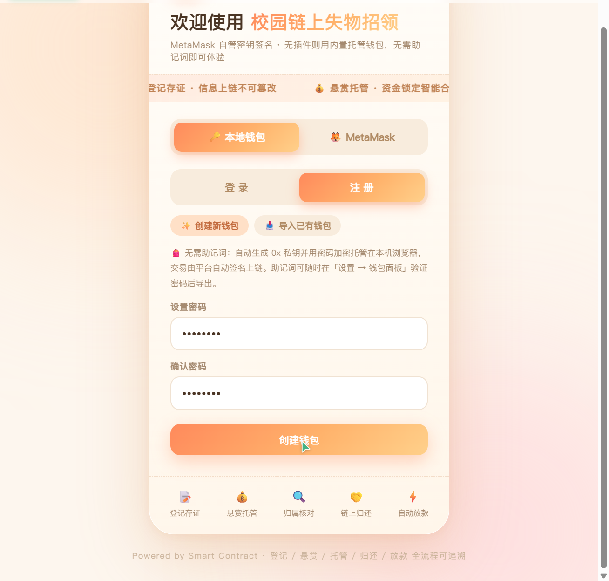

CampusChain 校园失物招领 DApp · 参赛作品报告
作品以一条原创 Solidity 智能合约实现「登记 — 悬赏 — 托管 — 归还 — 放款」全流程闭环：悬赏资金托管在合约而非任何个人或平台，归还经双方确认后由合约自动放款，全程不依赖后端服务器。系统已通过 37 项自动化测试断言，前端为单文件纯静态页面，已部署至 GitHub Pages 公网可访问。
01作品简介
校园失物招领长期依赖微信群、表白墙和失物招领处：信息容易被刷掉、冒领难以核验、拾金不昧者得不到激励，更严重的是「先转账后还物」的私了模式让双方都没有保障。CampusChain 把这件事搬上区块链：捡到物品的人把物品信息登记上链形成不可篡改的存证，失主发布悬赏时把押金或赏金锁进智能合约，归还完成、双方确认后合约自动把资金放款给拾获人，全程没有任何第三方经手资金。
系统由两部分组成：一条部署在 EVM 兼容链上的原创智能合约 CampusLostFound.sol（Solidity 0.8.20），和一个零依赖构建、浏览器直接打开的单文件前端 index.html。所有关键状态（物品、悬赏、托管资金、归还进度）都存储在链上，由合约状态机驱动流转。
为了照顾不熟悉 Web3 的普通同学，作品提供两种登录方式：安装 MetaMask 的用户自管密钥、逐笔签名；没有插件的用户使用内置托管钱包——只需设置一个密码即可创建账户，私钥加密后托管在本机浏览器，交易由页面自动签名上链，无需抄写助记词即可完整体验 Web3 流程。[2]
02开源代码与组件使用情况说明
作品智能合约为完全原创代码，未引入 OpenZeppelin 等第三方合约库，防重入、权限校验等安全逻辑均为手工实现并在报告中说明。使用的开源组件如下：
| 组件 | 版本 | 用途 | 许可 / 来源 |
|---|---|---|---|
| Solidity 编译器 | 0.8.20 | 编译智能合约（合约为原创代码） | GPL-3.0 / ethereum/solidity[3] |
| ethers.js | v6.13.4 | 前端与链交互：ABI 编解码、交易签名、钱包与助记词、加密存储 | MIT / unpkg CDN[4] |
| Hardhat | 2.x | 本地开发链、合约编译部署、自动化测试脚本运行环境 | MIT / Nomic Foundation[5] |
| Node.js | 18+ | 本地链与部署脚本运行环境 | MIT |
| GitHub Pages | — | 前端静态托管，提供公网永久访问地址 | GitHub 服务条款 |
03作品安装说明
方式一：在线体验（最简）
浏览器打开 https://2121762808.github.io/campus-lostfound/ 即可浏览界面并注册钱包。链上交互需要连接区块链节点，默认指向本地开发链，可在页面「设置」中修改 RPC 节点与合约地址。
方式二：本地完整部署（含本地区块链）
# 1. 安装依赖（需要 Node.js 18+） npm install # 2. 启动本地区块链（终端 1，chainId 31337） npm run node # 3. 部署合约（终端 2，输出合约地址，自动写入前端配置） npm run deploy:local # 4. 用浏览器打开 frontend/index.html，创建钱包即可使用
方式三：MetaMask 用户
在 MetaMask 中添加网络：RPC 地址 http://127.0.0.1:8545，链 ID 31337；导入 Hardhat 启动时输出的任一测试账户私钥。之后在登录页切换到「MetaMask」面板点击连接即可，前端会自动检测并提示切换网络。
多设备演示（手机 + 电脑）
以 npm run node -- --hostname 0.0.0.0 启动节点，并用 node scripts/serve.js 把前端托管到局域网，手机与电脑连同一 Wi-Fi 后访问 http://<电脑局域网 IP>:8000 即可；页面会自动识别局域网地址并把节点指向同一台主机。
运行自动化测试
# 业务流程测试（20 项断言：双流程 / 超时放款 / 取消退款 / 权限校验） npm run test:flow # 托管钱包与前端代码路径测试（9 + 8 项断言） npm run test:wallet
04作品效果图
以下截图取自作品真实运行界面。

05设计思路
统一状态机驱动两条业务流程
失物招领有两个天然入口：拾获人「我捡到了」和失主「我丢了」。作品把两条流程抽象为同一个四态状态机，拾获登记与寻物悬赏复用同一套托管、确认、放款逻辑，合约更简洁也更易审计：
- 流程一（拾获登记）：拾获人登记物品信息上链存证 → 失主认领时向合约托管一笔押金 → 拾获人归还后在链上标记 → 失主确认，合约把押金放款给拾获人。
- 流程二（寻物悬赏）：失主发布悬赏并托管赏金 → 拾获人报名 → 失主线下核对物品特征、在链上指定拾获人 → 归还确认后合约放款。核对错误可解除匹配重新开放报名。
资金全程托管在合约
押金与赏金通过 payable 函数随交易锁入合约地址，任何账户（包括失主本人）都无法在状态机允许的路径之外动用它。放款前先更新状态再转账（Checks-Effects-Interactions），并加防重入锁，杜绝重入攻击把托管资金重复取走。每个环节都发出事件日志，区块浏览器可完整追溯「谁在什么时间登记、托管、归还、放款」。
零后端的纯 DApp 架构
前端是单个 HTML 文件，通过 CDN 引入 ethers.js，经 JSON-RPC 直连区块链节点；读操作调用合约 view 函数（免 gas），写操作本地签名后广播。没有账号服务器、没有数据库、没有托管资金的平台方——撤掉任何一台服务器，链上数据和资金规则都不受影响。
降低门槛的双钱包设计
| MetaMask 模式 | 内置托管钱包模式 | |
|---|---|---|
| 密钥保管 | 用户浏览器插件，网页无法读取私钥 | 本机浏览器 localStorage，密码加密存储 |
| 交易签名 | 插件弹窗，用户逐笔确认 | 页面用解密后的私钥自动签名 |
| 助记词 | 由 MetaMask 管理 | 随机生成 BIP39 12 词，可随时验证密码导出 |
| 适用人群 | 熟悉 Web3、希望完全自管的用户 | 没有插件的普通同学，设个密码即可上手 |
06设计重点难点
合约持有真实资金，放款函数是攻击面核心。实现上严格执行 Checks-Effects-Interactions：先把托管金额清零、状态置为 Completed，再执行外部转账；同时用 locked 防重入开关保护所有涉及转账的函数。测试中专项验证了「合约余额最终归零、无资金滞留」。
链上无法判断现实中谁才是真失主，因此设计了「线下核对 + 链上确认」的权责划分：悬赏流程中拾获人先报名，失主核对物品细节后在链上 confirmFinder 指定拾获人，合约只放款给被指定的地址；登记流程中押金只有认领人支付后才能推进状态，从机制上压缩冒领空间。
若失主收到物品后故意不点确认，押金将永远锁死。合约为此设置 7 天保护期：拾获人标记归还满 7 天后，任何地址都可调用 timeoutRelease 触发放款，用时间戳规则代替人工仲裁。
普通同学没有 MetaMask，直接抄写助记词门槛很高。作品在浏览器内实现完整托管钱包：随机生成 0x 开头 64 位十六进制私钥与标准 BIP39 12 词助记词，用钱包密码经 PBKDF2 派生密钥后以 AES-GCM 加密，密文才写入 localStorage；登录和解密都在本地完成，明文私钥从不落盘。导出助记词必须先通过密码验证。
开发中发现 ethers v6 的 JsonRpcProvider 会缓存账户 nonce，连续发起交易会导致第二笔失败，通过关闭缓存解决；钱包解密耗时（约 0.3 秒）需要明确的状态提示避免用户重复点击；手机访问时 127.0.0.1 指向手机自身，通过前端自动识别局域网地址并切换 RPC 解决。这些问题均在自动化测试与真机联调中验证修复。
07指导老师自评
该作品选题贴近校园生活，把区块链「资金托管」与「不可篡改存证」两个核心特性落到了一个真实可感的场景上。学生独立完成了从合约设计、状态机抽象、安全编码到前端工程化的完整链路，对智能合约的资金安全风险（重入、权限、僵局）有清醒认识并给出了工程化解法。作品提供了双钱包登录与免插件托管钱包，体现了让普通用户使用区块链的产品意识。测试覆盖双业务流程、超时放款、取消退款与权限校验，完成度较高。同意推荐参赛。
08学校推荐意见
经审核，该作品为学生独立完成，代码原创，无抄袭及知识产权争议。作品将区块链技术与校园公共服务场景结合，具有较好的示范意义和推广价值。同意推荐该作品参加全国大学生数智链应用大赛。
09其他说明
测试情况
| 测试脚本 | 覆盖场景 | 断言数 |
|---|---|---|
test-flow.js | 登记-认领-归还-放款全流程；悬赏-报名-核对-放款全流程；7 天超时自动放款；撤销悬赏退款、取消认领退款；非失主指定拾获人、零押金认领、自我认领等权限拦截 | 20 |
test-wallet.js | 托管钱包创建与加密、密码登录、错误密码拒绝、RPC 直连、领测试币、登记与放款到账 | 9 |
test-wallet2.js | 私钥格式（0x + 64 位十六进制）、助记词还原私钥、助记词加密存储、旧版本地数据兼容 | 8 |
已知限制与后续方向
- 联系方式当前明文上链，仅适合演示；正式环境应在前端用认领方公钥加密或只存哈希。
- 超时放款采用「默认信任拾获人」的时间规则；更完备的做法是引入争议状态与去中心化仲裁（如 Kleros）。
- 可为归还行为累积链上信誉分，进一步抑制冒领。
兼容性
前端为纯静态单文件，Chrome / Edge / Safari 及手机浏览器直接打开即可运行；合约可部署到任意 EVM 兼容链（Hardhat 本地链、Sepolia、Polygon Amoy 等），在页面「设置」中切换 RPC 与合约地址即可。